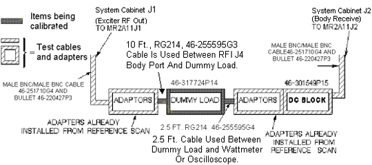
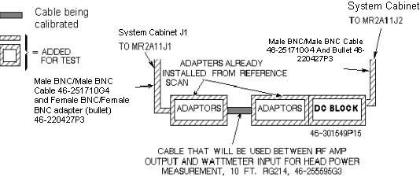

Operating Documentation
Direction 5500113, Rev# 3
Discovery MR450 1.5T Service Methods
Module Version 1.0, Version Date 5/3/07
Operating Documentation |
| Required Persons | Preliminary Reqs | Procedure | Finalization |
|---|---|---|---|
| 1 | Not Applicable | 30 mins | Not Applicable |
This procedure provides directions for determining the true loss attributable to the dummy load and cables used when measuring the RF output power with a wattmeter or oscilloscope of 100 MHz bandwidth or greater. It is necessary to know and account for the actual loss these components contribute in order to accurately measure RF power. This procedure is not needed if using the RF Power Measurement Kit. The RF Power Measurement Kit has already been calibrated so that this loss is known and accounted for.
| NOTE: | WHEN MEASURING HIGH FREQUENCY (IN THIS CASE, 42 OR 64 MHZ ) ON ANY 100 MHZ SCOPE, THERE MAY BE AN ERROR DUE TO THE BANDWIDTH LIMITATIONS OF THE SCOPE. (IF NECESSARY, READ ‘SCOPE TRIVIA’ AT THE END OF THIS PROCEDURE.) |
| Item | Qty | Effectivity | Part# | Manufacturer | |
|---|---|---|---|---|---|
| 50-ohm dummy load, 200 watt, 30 dB attenuator - Bird Model 8322 (or equivalent). | 1 | - | 46-317724P14 | - | |
| RF Test Cables Kit | 1 | - | 46-255816G1 | - | |
No general safety information.
Test cables long enough to reach the cables, connectors and dummy load to be tested are connected between the Exciter RF Output (System Cabinet J1) and Receiver Body Input (System Cabinet J2). Receiver gains (R1 & R2) and transmit gain (TG) are set for near full scale reading on the power spectrum during prescan calibration. A reference scan is taken and stored in a raw file. The Attenuation Test Tool is used to calculate the baseline factor from the reference scan for the test cables (i.e., there is some loss from the test cables).
The dummy load and/or cable(s) to be tested are next inserted in series with the test cables and another scan is taken. Again, the Attenuation Test Tool is used to determine the “Magnitude Squared Attenuation Factor” (i.e., how much has the test signal been attenuated?). This attenuation factor is used in the RF power calibration process to accurately calculate the RF power level.
| NOTE: | If any problems are encountered during the following procedure, always start over at the beginning and re-do the reference scan. Then you may add, as directed in this procedure, any type of attenuation hardware you might have reason to test. |
Disable the (U)TNS.
If system is equipped with a TNS then bypass the body TNS module with a female-BNC to female-BNC adapter.
| NOTE: | Failure to bypass the body TNS out of the circuit may result no signal being received by the system. Merely disabling the TNS by moving the Enable/Disable toggle switch down to the Disable position instead of bypassing it out of the circuit may work, however, the TNS processor can override the switch. |
Locate the body TNS on the TNS module. This is one of the two shiny metal TNS boxes affixed to the main TNS module assembly that is mounted farthest from the rear of the cabinet. Multicoil systems have an additional piggyback board affixed with 3 extra TNS boxes that mounts over the top of the main TNS module assembly.
Bypass the body TNS (A24 A1 A1) from the circuit by disconnecting the small coax cables A24 A1 A1 J12 (signal output) and A24 A1 A1 J2 (signal input) from the TNS and connecting both together using a female-BNC to female-BNC adapter (also known as a bullet adapter 46-220427P3).
If the system is equipped with a UTNS3 (Not UTNS2 or TNS) see Stopping and Starting UTNS3 for the procedure to shutdown the UTNS3.
Reconfigure test hardware as shown in Illustration 1.
Illustration 1: CONNECTIONS FOR INITIAL AMPLITUDE SCAN

| NOTE: | Adapters not shown in Illustration 1 can be added, if necessary, from the RF Cables Kit. Usage of the inline DC Block as shown in Illustration 1 is mandatory. |
Disconnect the existing cables at the Systems cabinet I/F panel J1 (RF Out) and J2 (Receiver Body Input) and set them aside.
Connect the assembled test cables and adapters between J1 (RF Out) and J2 (Receiver Body Input) on the System Cabinet interface.
At the operator work space, prepare the system for a Dummy Load scan using the procedure, see below.
Click on [New Pt]
Id: geservice
Name: dummy load
Weight (Lb): 111
Set Patient Protocols to Service.
In the Protocol field, type o.18.1 (o=Other, 1=series number) to load the protocol.
Set a landmark if necessary, then [Save Series].
With the right mouse key, select [Research Operations], then select [Display CVs].
Set value of CV calmode to 2 (trapezoid pulse).
(Caution here. Make sure the previous CV has been cleared before entering the next one. Look at the screen!)
Set value of CV p2_ramp to 1 (1 µsec ramp time).
Set value of CV t2 to 50000 (50 msec tr).
Set value of CV pismode to 1 (exc service).
Set value of CV pmode to 1 (data collection).
Set value of CV daqm to 1 (data in window).
Select [Accept] and then select [Research Operations], then select [Download] then select [Manual Prescan].
When in [Manual Prescan], set R1 to 7, and R2 to 13.
Adjust transmit gain (TG) to achieve an R1 or R2 (on IP display) of approximately 98%, without going over.
Select [Done].
Select [Scan] (Ignore the message: MR signal too large, reduce receiver gain.) (Note: on the LX systems tested, the scan time starts at 13 seconds, counts down to 7 seconds, then ends. This is normal and is not cause for alarm.)
From the MR Tools desktop select [Cals/checks] and then [Attenuation Test] or, from the MR Service Desktop, select Calibration, then Attenuation Test, and then Click here to start this tool.
Use [Atten Test] tool selection to analyze data, as shown in Table 1.
Table 1: DATA COLLECTION
| Output/Prompts | Input/ Comments |
| Last run number used was: XXXX | |
| Please enter runfile number (XXXX): ..... | <Enter> |
| Please select Locked / Unlocked file (L,U) (U):.......... | <Enter> (working) |
| **************************************** ****************************************** Average Max. magnitude Across All Views = aaaaa Average Max. magnitude Squared = bbbbb Average RMS Across All Views = ccccc ****************************************** | |
| Do you want to make this run the reference(Y,N)(N):...... | Y<Enter> |
| STOP! Do not answer the next question at this point. Continue with Step 7 below. |
The next step will involve removing only the center male N to male N adapter from the test cables, setting it aside, and adding in the dummy load and cables that need to be characterized.
| NOTE: | This assumes that the item to be characterized has N female connectors at it’s input and output. If it has an N connector at the input and a BNC at the output or BNC connectors at both the input and output then an additional adapter(s) will be needed in order to connect it to the test cables. Adding in one or two uncharacterized adapters should not appreciably change the baseline attenuation factor. In this case, if the wattmeter is not being used, the 2.5 ft. cable (RG214, 46-255595G4) can be eliminated from the circuit. It is not needed. |
Connect your test cables to the opposite ends of either:
Illustration 2 - Dummy Load and Cables
Illustration 3 - Amplifier to Wattmeter Cable.
Illustration 2: CONNECTIONS FOR DUMMY LOAD + CABLES SCAN

Illustration 3: AMP TO WATTMETER CABLE SCAN

| NOTE: | "Bullet" RF connector referred to in Illustration 2 and Illustration 3 is a female BNC/female BNC adapter, 46-220427P3. |
Select the scanning icon again to activate the scanning screen.
Select [Scan].
When the scan is completed, continue with Analysis in Analysis..
See Table 2.
Table 2: ANALYSIS
| Output/Prompts | Input/Comments |
| Do you want to compute Gain or Attenuation Ratio(G,A)[G]: | A<Enter> IMPORTANT: Answer after the scan is done. |
| Please do the next scan… | |
| Press enter key to continue, s or q to quit []: | <Enter> |
| Last run number used was: XXXX | |
| Please enter runfile number [XXXX]:....................... | <Enter> |
| Please select Locked/Unlocked File (L/U) (L)..... | |
| ********************************* *********************************** Average Max. Magnitude Across All Views = aaaaa Average Max. Magnitude Squared = bbbbb Average RMS Across All Views = ccccc Magnitude Attenuation Factor = xxxxx Magnitude Squared Attenuation Factor = yyyyy RMS Attenuation Factor = zzzzz | Record yyyyy value in Table 3 |
| Do you want to make this run the reference(Y,N)(N):...... | N<Enter> |
Record the “Magnitude Squared Attenuation Factor” number and record it in the appropriate Value box in Table 3.
Table 3: ATTENUATION FACTORS
| MODE | CALIBRATED HARDWARE | PART NUMBER(S) | VALUE | NOMINAL VALUES |
| BODY OR HEAD | DUMMY LOAD + CABLES ATTEN FACTOR | 46-255595G3 46-317724P14 46-255595G4 | 1000 TO 1200 | |
| HEAD | AMP TO WATTMETER ATTEN FACTOR | 46-255595G3 | 1.0 TO 1.2 |
Peak voltage should be used in the calculation in order to get an accurate result. It can be converted to power using the following formula as long as certain factors are known and accounted for. The scope correction factor MUST be known. So must the actual total loss attributed to anything that connects the measuring device to the source. This often includes the accumulated loss associated with the dummy load and any interconnecting cables. Table 4 shows the calculation of power if all the attenuating devices in the measurement circuit exhibited perfect loss; that is, the devices added no more or less loss than what they were designed to provide. Table 5 shows the same calculation of power but accounts for the measurement-circuit loss values in deriving the true power. Note that the loss has a significant impact on the calculated power.
| NOTE: | THE SCOPE CORRECTION FACTOR MUST BE KNOWN FOR THE FORMULAE SHOWN IN Table 4 AND Table 5. IF IT IS NOT KNOWN, DO NOT USE THIS METHOD. GROSSLY INACCURATE MEASUREMENTS AND POSSIBLE SYSTEM DAMAGE WILL RESULT. |
Table 4: RF POWER CALCULATION WITH NO LOSS
 Assume Z = 50 Ω, Vpeak = 40.0, scope correction factor = 1.00
(no loss), dummy load and cables atten. = 1000, (dummy load and cables are
all ideal) Assume Z = 50 Ω, Vpeak = 40.0, scope correction factor = 1.00
(no loss), dummy load and cables atten. = 1000, (dummy load and cables are
all ideal)
|
Now, consider the "real life" type situation in Table 5 in which the loss is considered:
Table 5: RF POWER CALCULATION WITH LOSS CONSIDERED
Assume Z = 50 Ω, Vpeak = 34.61, scope correction factor = 0.88, dummy load and cables atten. = 1028  Accounting for the loss resulted in an accurate answer. 15899 Watts is as close as we can hope to get to 16000 Watts without using the RF Power Measurement Kit. Note that if none of the loss had been accounted for the error could have been 3587 Watts or 22.6%. As a result, the observer would attempt to adjust the RF power far above the 16000 Watt limit! |
Reconnect original cables to the System Cabinet I/F J1 and J2.
Enable the (U)TNS.
If system is equipped with a TNS then remove the female-BNC to female-BNC adapter and reconnect RF cable A24 A1 A1 J12 (signal output) to the bottom of the body TNS module and RF cable A24 A1 A1 J2 (signal input) to the top of the body TNS module.
If the system is equipped with a UTNS3 see Stopping and Starting UTNS3 for the process to restart the UNTNS.
| NOTE: | 10.0 SOFTWARE OR EQUIVALENT: WHENEVER THE “CALMODE” CV IS CHANGED A TPS RESET MUST BE DONE BEFORE ATTEMPTING TO SCAN. THIS IS NECESSARY IN ORDER TO SET THE MGD BACK INTO IMAGING MODE. FAILURE TO DO THIS WILL RESULT IN THE LOSS OF RECEIVE SIGNAL AND AUTOPRESCAN FAILURES. |
10.0 Software or equivalent: Perform a TPS Reset to set the MGD back to imaging mode so that the system will be able to scan. Failure to do this will result in Autoprescan failures due to a loss of receive signal.
Perform one satisfactory head or body scan.
Why are measurements between a oscilloscope and a Bird Wattmeter found to be different? Repeated GEMS Education Center lab groups that performed the Dummy Load and Cables attenuation process correctly, and obtained an accurate attenuation value, were able to accurately measure RF power as well as with a 400 MHZ scope! Remember, for wattmeter measurements however, the meter reading must be multiplied by the atten factor. Leaving this little factor out is the reason why the above ‘note’ was made. In body mode the wattmeter is placed after the dummy load. Its atten value must be used to calculate the correct RF value. If it is NOT used, then it should be expected there will be an error of 10% or more!
In head mode, the wattmeter is placed before the dummy load. In this case only the ‘cable’ factor is used to correct the wattmeter reading. The ‘cable’ factor is the other atten test you did for the 10 foot cable only. Typically that value is between 1.0 to 1.2. Doesn’t sound like much???? Take your calculator out for a moment. Take 2,000 watts (displayed reading) and multiply by an atten factor of 1.0 ; the results are obvious, 2,000 watts. Now take the same displayed 2,000 and multiply it by an atten factor of 1.2 = 2,400 watts! Hopefully this example will show the importance of the attenuation values. You just calculated a 20% error if you were wrong because you didn’t do atten test on the 10 foot cable!
A basic ‘rule of thumb’ in the scope industry is that ‘to accurately measure a high frequency signal, the bandwidth of the scope should be at least 5X the frequency being measured’. That means that for a 64 MHZ signal the scope bandwidth would have to be at least 320 MHZ. Along the same line, a 42 MHZ signal would require a bandwidth of at least 210 MHZ. This is why the 400 MHZ scope was chosen several years ago for MR use. Knowing this should alert you as to what might have to be done in order to get correct scope readings from whatever scope you carry today. Who knows what bandwidth scope you’ll be working with tomorrow? Will it be of sufficient bandwidth to give accurate measurements? What can you do if it is not covered by the rule of thumb? Read on!
Experimentation with multiple scopes have shown that an error is typically somewhere between 0 and 16%. That’s right, some 100 MHZ scopes have no loss! Others may have as much as 15 or 16%. Additionally, it has been found that it is not necessarily the whole scope that has this loss, but the individual channels typically exhibit differences. In other words, channel one might have a 3% loss when channel two could lose 15%. There is no fixed number for all 100 MHZ scopes!
How do you get around these losses? Well, there are two ways. First you could compare a RF waveform on your scope, side by side, with a 400 MHZ scope. Use the same cables etc. and just move the cables from scope to scope. You can then calculate the loss for each channel of the 100 MHZ scope vs. the 400 MHZ scope. Keep the scope intensity low for best accuracy. If and when possible, determine the losses for a 1.5T and 1.0T system. That’s for 64 and 42 MHZ. Point of note: there are various losses at 42 MHZ as well as with 64 MHZ. And, typically they differ! Your scope may have a 0 to 15% rolloff at 64 MHZ and 0 to 12% at 42 MHZ. All scopes differ!
Secondly, the next time you have your scope calibrated, just attach a tag asking for the % loss of signal at 42 and 64 MHZ for each channel. You should also state that you want this to be done at the 5 and 2 volts/div setting. This will cover both body and head measurements. At two different re-calibration vendors we use, there are no extra charges incurred for this request.
As mentioned above, the 100 MHZ scope has been shown to be as accurate as a 400 MHZ scopes if the scope rolloff factor is known. Additionally, each channel has it’s own unique loss factor.
The biggest error found in GEMS Education Center labs when measuring RF power has proven to be the FE using “typical” dummy load and cables attenuation factors. Basically there are no “typical” factors! All loads and cables are somewhat different. Several may appear to be close in value, but in most cases they are different. If you use a “typical” atten factor in your calculations, then ”typically” you will be in error.
Through experimentation at the GEMS Education Center, it has been determined that if you know the attenuation factor for a particular dummy load and cables, those values hold over several years. They do NOT tend to change. This means that if you could do atten test on a dummy load and cables, and keep them as a kit, you don’t have to recalibrate them every time you use them. Wow! And possibly a little cheaper than the Power Measurement kit.
If you must, or intend to use a scope to measure body RF power, use atten test on the dummy load and cables.
Knowing the correct attenuation values and the correct scope rolloff values will provide you with measurements as accurate as a 400 MHZ scope and / or the GE Power Measurements kit.
No finalization steps.